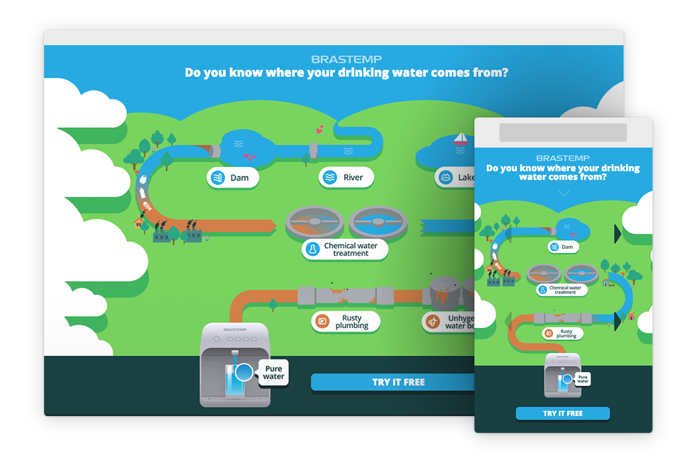
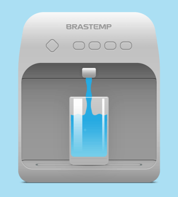

2016
Brastemp Campaign
Landing page designed to promote Brastemp's (a subsidiary of Whirlpool) water purifiers.
The purpose of this campaign was to let visitors know where their tap water comes from – from the very origin to all the stops before it arrives at their home.
This landing page was the key component of the campaign and consisted of a simple and responsive infographic showcasing all the information in a concise and engaging manner.
Visit a live, English version here.

